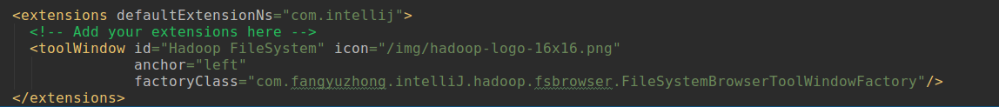

上节，把Hadoop-IntelliJ-Plugin 插件项目做了一个简单的介绍，接下来，我将会使用几个篇幅，大致的讲解一下该插件的设计思路和相关的实现。
Hadoop-IntelliJ-Plugin 插件的需求
Hadoop-IntelliJ-Plugin 插件要实现的需求很简单，给定HDFS的访问地址，可以展示出HDFS文件系统相关对象、能够操作HDFS上的对象（创建、删除、下载和上传等）。具体的需求如下：
1、能够进行HDFS访问相关信息的配置
2、读取HDFS对象，以文件目录树的方式进行展示
3、对于目录，可以创建、删除、刷新、重命名和下载
4、对于文件，可以删除、下载和查看（目前不区分具体文件类型，查看文件，目前还没有实现
5、能够获取目录或者文件的相关属性信息进行展示
6、在操作HDFS对象（目录或文件）需要注意当前的权限设置
7、支持国际化多语言设置
8、方便快捷的使用Intellij 进行MapReduce的相关任务开发和调试（正在设计开发中）
Hadoop-Intellij-Plugin 是基于IntelliJ IDEA 开发的插件，因此需要熟悉IntelliJ IDEA的 插件开发。下面就简单介绍一下IDEA的插件开发。
IntelliJ IDEA 的插件开发
IntelliJ IDEA 插件开发现在国内的资料比较少，目前最好的参考文档，就是官方SDK开发帮助，但目前也不知道是不是最新。做IDEA开发可以参考一下：http://www.jetbrains.org/intellij/sdk/docs/welcome.html
这里大致讲解一下，插件开发的需要弄清楚的几个概念，我就不具体详细说明插件开发步骤了。
IDEA插件组织结构
IDEA Plugin 以.zip 结尾的压缩包，安装后，由插件文件内的一个.jar 构成的。该jar 为插件的核心文件，解压后，由 com 文件夹、META-INF 文件夹组成，如果开发的插件还有一些图标或者其他文件，都要存放到该包中。典型的插件目录结构如下：
1 | |-- .IntelliJIdea |
2 | |-- config |
3 | |-- Plugin |
4 | |-- lib |
5 | |-- HadoopIntellijPlugin-1.0.jar |
6 | |-- com |
7 | |-- img |
8 | |-- META-INF |
9 | |-- plugin.xml |
所有来自插件目录lib下的jar包，会被自动加入ClassPath中。了解该结构很重要，这涉及到后续插件开发完成后，插件安装包的制作。开发的插件，如果涉及到第三方jar包，那么在打安装包时，需要一起将这些依赖加入进去。为了加载各个插件的类文件，IDEA使用一个单独的类加载器。这允许各个插件使用同一类库的不同版本，即使相同的类库被IDEA或另一个插件使用。 默认情况下，IDEA的主要类加载器加载那些插件类加载器找不到的类。然而，在plugin.xml文件中，可以使用depends元素来指定一个插件依赖于另一个或更多其他插件。在这种情况下，那些（被依赖的）插件的类加载器将（优先）用来加载当前插件的类加载器找不到的类。这将允许一个插件引用另一个插件中的类。
插件相关组件说明
在IDEA插件开发中，有3个级别组件：Application Component、Project Component、Module Component
(1)、Application Component 应用程序级 组件，是IDEA启动时，就初始化的组件。可以从Application实例中使用getComponent(Class)方法来获取它们。定义Application 级别的插件，需要实现ApplicationComment 接口。需要实现 initComponent()、disposeComponent() 方法。如果ApplicationComponent组件不依赖与其他的Application组件，那么必须显示声明一个无参构造函数，进行组件的初始化；如果开发的ApplicationComponent依赖与其他的Application组件，应该指定依赖的Application作为构造函数的参数，以确保这些组件按照正确的顺序实例化保证依赖关系。ApplicationComponent组件 实现类，需要在插件配置文件plugin.xml中进行注册，以保证生效。配置文件中以 <application-components> </application-components> 标记为ApplicationComponent ，后面的插件配置文件再讲。
(2)、Project Component IDEA工程Project级别组件，在IDEA加载一个Project的时候初始化。
可以从Project实例中使用getComponent(Class)方法来获取他们。Project 级别的组件，需要实现 ProjectComponent 接口。并在 插件配置文件中使用<project-components></project-components> 标记注册。
(3)、Module Component IDEA加载各个Project时为各个Module创建。
ModuleComponent 组件实现类可以选择性的实现ModuleComponent接口。一个module Component 组件的构造器可以包含一个Module类型的参数，如果它需要一个module实例。还可以指定其他application-Component、project-Component或者module-Component组件作为参数。在插件配置文件中使用<module-components></module-components>标记注册。
各个级别的组件名称可由getComponentName()方法获取。IDEA 开发的插件也就是这3种类型了。各个插件的组件都需要在插件的配置文件中注册实现类。
3、插件组件状态持久化
插件组件实现类中，如果实现了 PersistentStateComponent 接口，那么该插件组件的状态会被自动保存和加载。插件的状态会保存到哪个xml配置
文件中，可以在 实现类中使用@State和@Storage注解来指定。
可参考：
http://www.jetbrains.org/intellij/sdk/docs/basics/persisting_state_of_components.html
插件组件扩展点
如果希望你开发的插件运行其他插件扩展功能，那在你开发的插件中，需要声明一个或者多个扩展点。每个扩展点定义允许访问这个扩展点的一个类和接口。在插件配置文件中，使用<extensions> 和<extensionPoints> 标记插件扩展点。
在<extensionPoints>节点，插入一个子元素<extensionPoint>，使用“name”、“beanClass”和“interface”属性来分别指定扩展点名和允许扩展插件功能的类或接口的名称。
①、对于<extensions>元素，设置defaultExtensionNs属性为以下一个值：
”com.intellij”，如果你的插件扩展IDEA内核功能点。<ID of a plugin>，如果你的插件扩展另一个插件的功能点。
②、向<extensions>元素增加一个新的子元素。 这个子元素名必须匹配扩展要访问的扩展点的名称。
③、根据扩展点的类型，你需要做如下中的一件：
如果扩展点是使用interface属性声明的，在新增的子元素中，设置implementation属性值为实现指定接口的类的名称。
如果扩展点是使用beanClass属性声明的，在新增的子元素中，设置所有有指定的类中被“@Attribute”标注注释的属性。
典型的扩展例子，如现在要在IDEA中增加一个浮动面板，那就需要扩展IDEA，插件配置代码片段：

插件Action动作
插件动作Action，即插件的互交，也就是说，IDEA允许开发插件向IDEA的菜单栏、工具栏增加自己的菜单/工具实现。action 按照组被管理，一个组可以包含其他的组，一组Action可以形成一个工具栏和菜单，组的子组可以构成菜单的子菜单。自定义Action插件类，需要继承抽象类 AnAction， 实现actionPerformed 方法，将在菜单项或者工具栏按钮选中时调用。
插件服务
IntelliJ IDEA提供服务的概念。一个服务是一个在你的插件调用ServiceManager类的getService方法时按需加载的插件组件。即使一个服务被请求多次，IntelliJ IDEA也保证每个服务只有一个实例被加载。一个服务必须在plugin.xml文件中指明接口和实现类。服务的实现类用于服务的实例化。
IntelliJ IDEA提供3类服务：application服务、project服务和module服务。要声明一个服务，你可以使用如下IDEA内核的扩展点：applicationService: 设计用来声明一个application服务；projectService: 设计用来声明一个project服务；moduleService: 设计用来声明一个module服务.
声明一个服务的相关配置：
①、向plugin.xml文件的<extensions>节点添加适当的子元素（<applicationService>、<projectService>或<moduleService>）；
②、在新增的子元素里，设置如下属性： serviceInterface: 指定服务接口类；serviceImplementation: 指定服务实现类。注意接口和实现类可以是同一个类。
插件配置
下面列出 插件 hadoop-IntelliJ-Plugin 的配置文件，里面已经注明相关配置的项，可作为参考
1<idea-plugin>2 <!--插件的ID-->3 <id>com.fangyuzhong.intelliJ.hadoop</id>4 <!--插件的名称-->5 <name>基于IntelliJ IDEA 的Hadoop插件</name>6 <!--插件的版本-->7 <version>1.0.1000.1</version>8 <!--插件的作者描述-->9 <vendor email="906328924@qq.com" url="http://www.fangyuzhon.com">fangyuzhong</vendor>10 <!--插件描述-->11 <description><![CDATA[12 Enter short description for your plugin here.<br>13 <em>most HTML tags may be used</em>14 ]]></description>15 <!--插件变更相关说明-->16 <change-notes><![CDATA[17 Add change notes here.<br>18 <em>most HTML tags may be used</em>19 ]]>20 </change-notes>21 <!--插件编译的IDEA版本-->22 <!-- please see http://www.jetbrains.org/intellij/sdk/docs/basics/getting_started/build_number_ranges.html for description -->23 <idea-version since-build="2017.2.1"/>24 <!-- please see http://www.jetbrains.org/intellij/sdk/docs/basics/getting_started/plugin_compatibility.html25 on how to target different products -->26 <!-- uncomment to enable plugin in all products27 <depends>com.intellij.modules.lang</depends>28 -->29 <!--Application 级别组件注册-->30 <application-components>31 <component>32 <implementation-class>com.fangyuzhong.intelliJ.hadoop.fsconnection.ConnectionCache</implementation-class>33 </component>34 <component>35 <implementation-class>com.fangyuzhong.intelliJ.hadoop.options.DefaultProjectSettingsManager</implementation-class>36 </component>37 <component>38 <implementation-class>com.fangyuzhong.intelliJ.hadoop.globalization.LocaleLanguageManager</implementation-class>39 </component>40 </application-components>41 <!--Project级别组件注册-->42 <project-components>43 <component>44 <implementation-class>com.fangyuzhong.intelliJ.hadoop.fsbrowser.FileSystemBrowserManager</implementation-class>45 </component>46 <component>47 <implementation-class>com.fangyuzhong.intelliJ.hadoop.fsconnection.ConnectionManager</implementation-class>48 </component>49 <component>50 <implementation-class>com.fangyuzhong.intelliJ.hadoop.options.ProjectSettingsManager</implementation-class>51 </component>52 </project-components>53 <!--插件扩展点-->54 <extensions defaultExtensionNs="com.intellij">55 <!-- Add your extensions here -->56 <toolWindow id="Hadoop FileSystem" icon="/img/hadoop-logo-16x16.png"57 anchor="left"58 factoryClass="com.fangyuzhong.intelliJ.hadoop.fsbrowser.FileSystemBrowserToolWindowFactory"/>59 </extensions>60 <!--插件的Action-->61 <actions>62 <!-- Add your actions here -->63 <group id="HadoopNavigator.Actions.MainMenu" text="_Hadoop">64 <action id="HadoopNavigator.Actions.Browser.ShowHadoopToolWindow"65 class="com.fangyuzhong.intelliJ.hadoop.mainmenu.action.ShowHadoopToolWindowAction"66 text="Hadoop 文件系统" />67 <action id="HadoopNavigator.Actions.MainMenu.OpenSettings"68 class="com.fangyuzhong.intelliJ.hadoop.mainmenu.action.MenuOpenSettingAction"69 text="Settings" />70 <separator/>71 <action id="HadoopNavigator.Actions.MainMenu.OpenAbout"72 class="com.fangyuzhong.intelliJ.hadoop.mainmenu.action.OpenAboutPageAction"73 text="About" />74 <!--<action id="HadoopNavigator.Actions.MainMenu.TestOpenObject"-->75 <!--class="com.fangyuzhong.intelliJ.hadoop.mainmenu.action.TestOpenObjectAction"-->76 <!--text="测试-打开" />-->77 <add-to-group anchor="before" group-id="MainMenu" relative-to-action="HelpMenu"/>78 </group>79 <group id="HadoopNavigator.ActionGroup.Browser.Controls" text="Browser object properties">80 <action id="HadoopNavigator.Actions.Browser.OpenSettings"81 class="com.fangyuzhong.intelliJ.hadoop.fsbrowser.action.OpenSettingsAction"82 text="Browser - Options"/>83 <separator/>84 <action id="HadoopNavigator.Actions.Browser.NavigateBack"85 class="com.fangyuzhong.intelliJ.hadoop.fsbrowser.action.NavigateBackAction"86 text="Browser - Back"/>87 <action id="HadoopNavigator.Actions.Browser.NavigateForward"88 class="com.fangyuzhong.intelliJ.hadoop.fsbrowser.action.NavigateForwardAction"89 text="Browser - Forward"/>90 <action id="HadoopNavigator.Actions.Browser.ExpandTree"91 class="com.fangyuzhong.intelliJ.hadoop.fsbrowser.action.ExpandTreeAction"92 text="Browser - Expand all"/>93 <action id="HadoopNavigator.Actions.Browser.CollapseTree"94 class="com.fangyuzhong.intelliJ.hadoop.fsbrowser.action.CollapseTreeAction"95 text="Browser - Collapse all"/>96 <action id="HadoopNavigator.Actions.Browser.ShowObjectProperties"97 class="com.fangyuzhong.intelliJ.hadoop.fsbrowser.action.ShowObjectPropertiesAction"98 text="Browser - Show object properties"/>99 </group>100 </actions>101</idea-plugin>